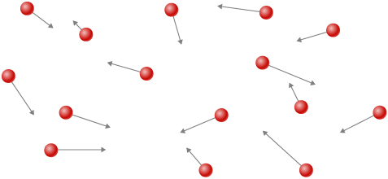

Apply the ideal gas law to situations involving the pressure, volume, temperature, and the number of molecules of a gas
Use the unit of moles in relation to numbers of molecules, and molecular and macroscopic masses
Explain the ideal gas law in terms of moles rather than numbers of molecules
Apply the van der Waals gas law to situations where the ideal gas law is inadequate
In this section, we explore the thermal behavior of gases. Our word “gas” comes from the Flemish word meaning “chaos,” first used for vapors by the seventeenth-century chemist J. B. van Helmont. The term was more appropriate than he knew, because gases consist of molecules moving and colliding with each other at random. This randomness makes the connection between the microscopic and macroscopic domains simpler for gases than for liquids or solids.
How do gases differ from solids and liquids? Under ordinary conditions, such as those of the air around us, the difference is that the molecules of gases are much farther apart than those of solids and liquids. Because the typical distances between molecules are large compared to the size of a molecule, as illustrated in [link], the forces between them are considered negligible, except when they come into contact with each other during collisions. Also, at temperatures well above the boiling temperature, the motion of molecules is fast, and the gases expand rapidly to occupy all of the accessible volume. In contrast, in liquids and solids, molecules are closer together, and the behavior of molecules in liquids and solids is highly constrained by the molecules’ interactions with one another. The macroscopic properties of such substances depend strongly on the forces between the molecules, and since many molecules are interacting, the resulting “many-body problems” can be extremely complicated (see Condensed Matter Physics).
Atoms and molecules in a gas are typically widely separated. Because the forces between them are quite weak at these distances, the properties of a gas depend more on the number of atoms per unit volume and on temperature than on the type of atom.

The Gas Laws
In the previous chapter, we saw one consequence of the large intermolecular spacing in gases: Gases are easily compressed. [link] shows that gases have larger coefficients of volume expansion than either solids or liquids. These large coefficients mean that gases expand and contract very rapidly with temperature changes. We also saw (in the section on thermal expansion) that most gases expand at the same rate or have the same coefficient of volume expansion, . This raises a question: Why do all gases act in nearly the same way, when all the various liquids and solids have widely varying expansion rates?
To study how the pressure, temperature, and volume of a gas relate to one another, consider what happens when you pump air into a deflated car tire. The tire’s volume first increases in direct proportion to the amount of air injected, without much increase in the tire pressure. Once the tire has expanded to nearly its full size, the tire’s walls limit its volume expansion. If we continue to pump air into the tire, the pressure increases. When the car is driven and the tires flex, their temperature increases, and therefore the pressure increases even further ([link]).
(a) When air is pumped into a deflated tire, its volume first increases without much increase in pressure. (b) When the tire is filled to a certain point, the tire walls resist further expansion, and the pressure increases with more air. (c) Once the tire is inflated, its pressure increases with temperature.
[link] shows data from the experiments of Robert Boyle (1627–1691), illustrating what is now called Boyle’s law: At constant temperature and number of molecules, the absolute pressure of a gas and its volume are inversely proportional. (Recall from Fluid Mechanics that the absolute pressure is the true pressure and the gauge pressure is the absolute pressure minus the ambient pressure, typically atmospheric pressure.) The graph in [link] displays this relationship as an inverse proportionality of volume to pressure.
Robert Boyle and his assistant found that volume and pressure are inversely proportional. Here their data are plotted as V versus 1/p; the linearity of the graph shows the inverse proportionality. The number shown as the volume is actually the height in inches of air in a cylindrical glass tube. The actual volume was that height multiplied by the cross-sectional area of the tube, which Boyle did not publish. The data are from Boyle’s book A Defence of the Doctrine Touching the Spring and Weight of the Air…, p. 60.[footnote]
[link] shows experimental data illustrating what is called Charles’s law, after Jacques Charles (1746–1823). Charles’s law states that at constant pressure and number of molecules, the volume of a gas is proportional to its absolute temperature.
Experimental data showing that at constant pressure, volume is approximately proportional to temperature. The best-fit line passes approximately through the origin.[footnote]
Similar is Amonton’s or Gay-Lussac’s law, which states that at constant volume and number of molecules, the pressure is proportional to the temperature. That law is the basis of the constant-volume gas thermometer, discussed in the previous chapter. (The histories of these laws and the appropriate credit for them are more complicated than can be discussed here.)
It is known experimentally that for gases at low density (such that their molecules occupy a negligible fraction of the total volume) and at temperatures well above the boiling point, these proportionalities hold to a good approximation. Not surprisingly, with the other quantities held constant, either pressure or volume is proportional to the number of molecules. More surprisingly, when the proportionalities are combined into a single equation, the constant of proportionality is independent of the composition of the gas. The resulting equation for all gases applies in the limit of low density and high temperature; it’s the same for oxygen as for helium or uranium hexafluoride. A gas at that limit is called an ideal gas; it obeys the ideal gas law, which is also called the equation of state of an ideal gas.
Ideal Gas Law
The ideal gas law states that
where p is the absolute pressure of a gas, V is the volume it occupies, N is the number of molecules in the gas, and T is its absolute temperature.
The constant is called the Boltzmann constant in honor of the Austrian physicist Ludwig Boltzmann (1844–1906) and has the value
The ideal gas law describes the behavior of any real gas when its density is low enough or its temperature high enough that it is far from liquefaction. This encompasses many practical situations. In the next section, we’ll see why it’s independent of the type of gas.
In many situations, the ideal gas law is applied to a sample of gas with a constant number of molecules; for instance, the gas may be in a sealed container. If N is constant, then solving for N shows that pV /T is constant. We can write that fact in a convenient form:
where the subscripts 1 and 2 refer to any two states of the gas at different times. Again, the temperature must be expressed in kelvin and the pressure must be absolute pressure, which is the sum of gauge pressure and atmospheric pressure.
Calculating Pressure Changes Due to Temperature Changes
Suppose your bicycle tire is fully inflated, with an absolute pressure of (a gauge pressure of just under ) at a temperature of What is the pressure after its temperature has risen to on a hot day? Assume there are no appreciable leaks or changes in volume.
Strategy
The pressure in the tire is changing only because of changes in temperature. We know the initial pressure the initial temperature and the final temperature We must find the final pressure Since the number of molecules is constant, we can use the equation
Since the volume is constant, and are the same and they divide out. Therefore,
We can then rearrange this to solve for
where the temperature must be in kelvin.
Solution
Convert temperatures from degrees Celsius to kelvin
Substitute the known values into the equation,
Significance
The final temperature is about greater than the original temperature, so the final pressure is about greater as well. Note that absolute pressure (see Fluid Mechanics) and absolute temperature (see Temperature and Heat) must be used in the ideal gas law.
Calculating the Number of Molecules in a Cubic Meter of Gas
How many molecules are in a typical object, such as gas in a tire or water in a glass? This calculation can give us an idea of how large N typically is. Let’s calculate the number of molecules in the air that a typical healthy young adult inhales in one breath, with a volume of 500 mL, at standard temperature and pressure (STP), which is defined as and atmospheric pressure. (Our young adult is apparently outside in winter.)
Strategy
Because pressure, volume, and temperature are all specified, we can use the ideal gas law, to find N.
Solution
Identify the knowns.
Substitute the known values into the equation and solve for N.
SignificanceN is huge, even in small volumes. For example, of a gas at STP contains molecules. Once again, note that our result for N is the same for all types of gases, including mixtures.
As we observed in the chapter on fluid mechanics, pascals are , so Thus, our result for N is dimensionless, a pure number that could be obtained by counting (in principle) rather than measuring. As it is the number of molecules, we put “molecules” after the number, keeping in mind that it is an aid to communication rather than a unit.
Moles and Avogadro’s Number
It is often convenient to measure the amount of substance with a unit on a more human scale than molecules. The SI unit for this purpose was developed by the Italian scientist Amedeo Avogadro (1776–1856). (He worked from the hypothesis that equal volumes of gas at equal pressure and temperature contain equal numbers of molecules, independent of the type of gas. As mentioned above, this hypothesis has been confirmed when the ideal gas approximation applies.) A mole (abbreviated mol) is defined as the amount of any substance that contains as many molecules as there are atoms in exactly 12 grams (0.012 kg) of carbon-12. (Technically, we should say “formula units,” not “molecules,” but this distinction is irrelevant for our purposes.) The number of molecules in one mole is called Avogadro’s number and the value of Avogadro’s number is now known to be
We can now write , where n represents the number of moles of a substance.
Avogadro’s number relates the mass of an amount of substance in grams to the number of protons and neutrons in an atom or molecule (12 for a carbon-12 atom), which roughly determine its mass. It’s natural to define a unit of mass such that the mass of an atom is approximately equal to its number of neutrons and protons. The unit of that kind accepted for use with the SI is the unified atomic mass unit (u), also called the dalton. Specifically, a carbon-12 atom has a mass of exactly 12 u, so that its molar mass M in grams per mole is numerically equal to the mass of one carbon-12 atom in u. That equality holds for any substance. In other words, is not only the conversion from numbers of molecules to moles, but it is also the conversion from u to grams: See [link].
How big is a mole? On a macroscopic level, Avogadro’s number of table tennis balls would cover Earth to a depth of about 40 km.
Now letting stand for the mass of a sample of a substance, we have Letting m stand for the mass of a molecule, we have
Check Your Understanding The recommended daily amount of vitamin or niacin, for women who are not pregnant or nursing, is 14 mg. Find the number of molecules of niacin in that amount.
We first need to calculate the molar mass (the mass of one mole) of niacin. To do this, we must multiply the number of atoms of each element in the molecule by the element’s molar mass.
Then we need to calculate the number of moles in 14 mg.
Then, we use Avogadro’s number to calculate the number of molecules:
Check Your Understanding The density of air in a classroom and is . At what pressure is the density if the temperature is kept constant?
The density of a gas is equal to a constant, the average molecular mass, times the number density N/V. From the ideal gas law, we see that Therefore, at constant temperature, if the density and, consequently, the number density are reduced by half, the pressure must also be reduced by half, and
The Ideal Gas Law Restated using Moles
A very common expression of the ideal gas law uses the number of moles in a sample, n, rather than the number of molecules, N. We start from the ideal gas law,
and multiply and divide the right-hand side of the equation by Avogadro’s number This gives us
Note that is the number of moles. We define the universal gas constant as and obtain the ideal gas law in terms of moles.
Ideal Gas Law (in terms of moles)
In terms of number of moles n, the ideal gas law is written as
In SI units,
In other units,
You can use whichever value of R is most convenient for a particular problem.
Density of Air at STP and in a Hot Air Balloon
Calculate the density of dry air (a) under standard conditions and (b) in a hot air balloon at a temperature of . Dry air is approximately and .
Strategy and Solution
We are asked to find the density, or mass per cubic meter. We can begin by finding the molar mass. If we have a hundred molecules, of which 78 are nitrogen, 21 are oxygen, and 1 is argon, the average molecular mass is , or the mass of each constituent multiplied by its percentage. The same applies to the molar mass, which therefore is
Now we can find the number of moles per cubic meter. We use the ideal gas law in terms of moles, with , , , and . The most convenient choice for R in this case is because the known quantities are in SI units:
Then, the mass of that air is
Finally the density of air at STP is
The air pressure inside the balloon is still 1 atm because the bottom of the balloon is open to the atmosphere. The calculation is the same except that we use a temperature of , which is 393 K. We can repeat the calculation in (a), or simply observe that the density is proportional to the number of moles, which is inversely proportional to the temperature. Then using the subscripts 1 for air at STP and 2 for the hot air, we have
Significance
Using the methods of Archimedes’ Principle and Buoyancy, we can find that the net force on of air at is or enough to lift about 867 kg. The mass density and molar density of air at STP, found above, are often useful numbers. From the molar density, we can easily determine another useful number, the volume of a mole of any ideal gas at STP, which is 22.4 L.
Check Your Understanding Liquids and solids have densities on the order of 1000 times greater than gases. Explain how this implies that the distances between molecules in gases are on the order of 10 times greater than the size of their molecules.
Density is mass per unit volume, and volume is proportional to the size of a body (such as the radius of a sphere) cubed. So if the distance between molecules increases by a factor of 10, then the volume occupied increases by a factor of 1000, and the density decreases by a factor of 1000. Since we assume molecules are in contact in liquids and solids, the distance between their centers is on the order of their typical size, so the distance in gases is on the order of 10 times as great.
The ideal gas law is closely related to energy: The units on both sides of the equation are joules. The right-hand side of the ideal gas law equation is This term is roughly the total translational kinetic energy (which, when discussing gases, refers to the energy of translation of a molecule, not that of vibration of its atoms or rotation) of N molecules at an absolute temperature T, as we will see formally in the next section. The left-hand side of the ideal gas law equation is pV. As mentioned in the example on the number of molecules in an ideal gas, pressure multiplied by volume has units of energy. The energy of a gas can be changed when the gas does work as it increases in volume, something we explored in the preceding chapter, and the amount of work is related to the pressure. This is the process that occurs in gasoline or steam engines and turbines, as we’ll see in the next chapter.
The Ideal Gas Law
Step 1. Examine the situation to determine that an ideal gas is involved. Most gases are nearly ideal unless they are close to the boiling point or at pressures far above atmospheric pressure.
Step 2. Make a list of what quantities are given or can be inferred from the problem as stated (identify the known quantities).
Step 3. Identify exactly what needs to be determined in the problem (identify the unknown quantities). A written list is useful.
Step 4. Determine whether the number of molecules or the number of moles is known or asked for to decide whether to use the ideal gas law as where N is the number of molecules, or where n is the number of moles.
Step 5. Convert known values into proper SI units (K for temperature, Pa for pressure, for volume, molecules for N, and moles for n). If the units of the knowns are consistent with one of the non-SI values of R, you can leave them in those units. Be sure to use absolute temperature and absolute pressure.
Step 6. Solve the ideal gas law for the quantity to be determined (the unknown quantity). You may need to take a ratio of final states to initial states to eliminate the unknown quantities that are kept fixed.
Step 7. Substitute the known quantities, along with their units, into the appropriate equation and obtain numerical solutions complete with units.
Step 8. Check the answer to see if it is reasonable: Does it make sense?
The Van der Waals Equation of State
We have repeatedly noted that the ideal gas law is an approximation. How can it be improved upon? The van der Waals equation of state (named after the Dutch physicist Johannes van der Waals, 1837−1923) improves it by taking into account two factors. First, the attractive forces between molecules, which are stronger at higher density and reduce the pressure, are taken into account by adding to the pressure a term equal to the square of the molar density multiplied by a positive coefficient a. Second, the volume of the molecules is represented by a positive constant b, which can be thought of as the volume of a mole of molecules. This is subtracted from the total volume to give the remaining volume that the molecules can move in. The constants a and b are determined experimentally for each gas. The resulting equation is
In the limit of low density (small n), the a and b terms are negligible, and we have the ideal gas law, as we should for low density. On the other hand, if is small, meaning that the molecules are very close together, the pressure must be higher to give the same nRT, as we would expect in the situation of a highly compressed gas. However, the increase in pressure is less than that argument would suggest, because at high density the term is significant. Since it’s positive, it causes a lower pressure to give the same nRT.
The van der Waals equation of state works well for most gases under a wide variety of conditions. As we’ll see in the next module, it even predicts the gas-liquid transition.
pV Diagrams
We can examine aspects of the behavior of a substance by plotting a pV diagram, which is a graph of pressure versus volume. When the substance behaves like an ideal gas, the ideal gas law describes the relationship between its pressure and volume. On a pV diagram, it’s common to plot an isotherm, which is a curve showing p as a function of V with the number of molecules and the temperature fixed. Then, for an ideal gas, For example, the volume of the gas decreases as the pressure increases. The resulting graph is a hyperbola.
However, if we assume the van der Waals equation of state, the isotherms become more interesting, as shown in [link]. At high temperatures, the curves are approximately hyperbolas, representing approximately ideal behavior at various fixed temperatures. At lower temperatures, the curves look less and less like hyperbolas—that is, the gas is not behaving ideally. There is a critical temperature at which the curve has a point with zero slope. Below that temperature, the curves do not decrease monotonically; instead, they each have a “hump,” meaning that for a certain range of volume, increasing the volume increases the pressure.
pV diagram for a Van der Waals gas at various temperatures. The red curves are calculated at temperatures above the critical temperature and the blue curves at temperatures below it. The blue curves have an oscillation in which volume (V) increases with increasing pressure (P), an impossible situation, so they must be corrected as in [link]. (credit: “Eman”/Wikimedia Commons)
Such behavior would be completely unphysical. Instead, the curves are understood as describing a liquid-gas phase transition. The oscillating part of the curve is replaced by a horizontal line, showing that as the volume increases at constant temperature, the pressure stays constant. That behavior corresponds to boiling and condensation; when a substance is at its boiling temperature for a particular pressure, it can increase in volume as some of the liquid turns to gas, or decrease as some of the gas turns to liquid, without any change in temperature or pressure.
[link] shows similar isotherms that are more realistic than those based on the van der Waals equation. The steep parts of the curves to the left of the transition region show the liquid phase, which is almost incompressible—a slight decrease in volume requires a large increase in pressure. The flat parts show the liquid-gas transition; the blue regions that they define represent combinations of pressure and volume where liquid and gas can coexist.
pV diagrams. (a) Each curve (isotherm) represents the relationship between p and V at a fixed temperature; the upper curves are at higher temperatures. The lower curves are not hyperbolas because the gas is no longer an ideal gas. (b) An expanded portion of the pV diagram for low temperatures, where the phase can change from a gas to a liquid. The term “vapor” refers to the gas phase when it exists at a temperature below the boiling temperature.
The isotherms above do not go through the liquid-gas transition. Therefore, liquid cannot exist above that temperature, which is the critical temperature (described in the chapter on temperature and heat). At sufficiently low pressure above that temperature, the gas has the density of a liquid but will not condense; the gas is said to be supercritical. At higher pressure, it is solid. Carbon dioxide, for example, has no liquid phase at a temperature above . The critical pressure is the maximum pressure at which the liquid can exist. The point on the pV diagram at the critical pressure and temperature is the critical point (which you learned about in the chapter on temperature and heat). [link] lists representative critical temperatures and pressures.
Critical Temperatures and Pressures for Various Substances
Substance
Critical temperature
Critical pressure
K
Pa
atm
Water
647.4
374.3
219.0
Sulfur dioxide
430.7
157.6
78.0
Ammonia
405.5
132.4
111.7
Carbon dioxide
304.2
31.1
73.2
Oxygen
154.8
–118.4
50.3
Nitrogen
126.2
–146.9
33.6
Hydrogen
33.3
–239.9
12.9
Helium
5.3
–267.9
2.27
Summary
The ideal gas law relates the pressure and volume of a gas to the number of gas molecules and the temperature of the gas.
A mole of any substance has a number of molecules equal to the number of atoms in a 12-g sample of carbon-12. The number of molecules in a mole is called Avogadro’s number
A mole of any substance has a mass in grams numerically equal to its molecular mass in unified mass units, which can be determined from the periodic table of elements. The ideal gas law can also be written and solved in terms of the number of moles of gas:
where n is the number of moles and R is the universal gas constant,
The ideal gas law is generally valid at temperatures well above the boiling temperature.
The van der Waals equation of state for gases is valid closer to the boiling point than the ideal gas law.
Above the critical temperature and pressure for a given substance, the liquid phase does not exist, and the sample is “supercritical.”
Conceptual Questions
Two molecules can react with one molecule to produce two molecules. How many moles of hydrogen molecules are needed to react with one mole of oxygen molecules?
2 moles, as that will contain twice as many molecules as the 1 mole of oxygen
Under what circumstances would you expect a gas to behave significantly differently than predicted by the ideal gas law?
A constant-volume gas thermometer contains a fixed amount of gas. What property of the gas is measured to indicate its temperature?
pressure
Inflate a balloon at room temperature. Leave the inflated balloon in the refrigerator overnight. What happens to the balloon, and why?
In the last chapter, free convection was explained as the result of buoyant forces on hot fluids. Explain the upward motion of air in flames based on the ideal gas law.
The flame contains hot gas (heated by combustion). The pressure is still atmospheric pressure, in mechanical equilibrium with the air around it (or roughly so). The density of the hot gas is proportional to its number density N/V (neglecting the difference in composition between the gas in the flame and the surrounding air). At higher temperature than the surrounding air, the ideal gas law says that is less than that of the surrounding air. Therefore the hot air has lower density than the surrounding air and is lifted by the buoyant force.
Problems
The gauge pressure in your car tires is at a temperature of when you drive it onto a ship in Los Angeles to be sent to Alaska. What is their gauge pressure on a night in Alaska when their temperature has dropped to
? Assume the tires have not gained or lost any air.
Suppose a gas-filled incandescent light bulb is manufactured so that the gas inside the bulb is at atmospheric pressure when the bulb has a temperature of . (a) Find the gauge pressure inside such a bulb when it is hot, assuming its average temperature is (an approximation) and neglecting any change in volume due to thermal expansion or gas leaks. (b) The actual final pressure for the light bulb will be less than calculated in part (a) because the glass bulb will expand. Is this effect significant?
a. 0.137 atm; b. Because of the expansion of the glass, . Multiplying by that factor does not make any significant difference.
People buying food in sealed bags at high elevations often notice that the bags are puffed up because the air inside has expanded. A bag of pretzels was packed at a pressure of 1.00 atm and a temperature of When opened at a summer picnic in Santa Fe, New Mexico, at a temperature of the volume of the air in the bag is 1.38 times its original volume. What is the pressure of the air?
How many moles are there in (a) 0.0500 g of gas (b) 10.0 g of gas (c) How many molecules are present in each case?
a. b. 0.227 mol; c. molecules for the nitrogen, molecules for the carbon dioxide
A cubic container of volume 2.00 L holds 0.500 mol of nitrogen gas at a temperature of What is the net force due to the nitrogen on one wall of the container? Compare that force to the sample’s weight.
Calculate the number of moles in the 2.00-L volume of air in the lungs of the average person. Note that the air is at (body temperature) and that the total volume in the lungs is several times the amount inhaled in a typical breath as given in [link].
An airplane passenger has of air in his stomach just before the plane takes off from a sea-level airport. What volume will the air have at cruising altitude if cabin pressure drops to
?
A company advertises that it delivers helium at a gauge pressure of in a cylinder of volume 43.8 L. How many balloons can be inflated to a volume of 4.00 L with that amount of helium? Assume the pressure inside the balloons is and the temperature in the cylinder and the balloons is .
According to http://hyperphysics.phy-astr.gsu.edu/hbase/solar/venusenv.html, the atmosphere of Venus is approximately and by volume. On the surface, where the temperature is about 750 K and the pressure is about 90 atm, what is the density of the atmosphere?
An expensive vacuum system can achieve a pressure as low as at How many molecules are there in a cubic centimeter at this pressure and temperature?
The number density N/V of gas molecules at a certain location in the space above our planet is about and the pressure is in this space. What is the temperature there?
A bicycle tire contains 2.00 L of gas at an absolute pressure of and a temperature of . What will its pressure be if you let out an amount of air that has a volume of at atmospheric pressure? Assume tire temperature and volume remain constant.
6.86 atm
In a common demonstration, a bottle is heated and stoppered with a hard-boiled egg that’s a little bigger than the bottle’s neck. When the bottle is cooled, the pressure difference between inside and outside forces the egg into the bottle. Suppose the bottle has a volume of 0.500 L and the temperature inside it is raised to while the pressure remains constant at 1.00 atm because the bottle is open. (a) How many moles of air are inside? (b) Now the egg is put in place, sealing the bottle. What is the gauge pressure inside after the air cools back to the ambient temperature of but before the egg is forced into the bottle?
A high-pressure gas cylinder contains 50.0 L of toxic gas at a pressure of and a temperature of . The cylinder is cooled to dry ice temperature to reduce the leak rate and pressure so that it can be safely repaired. (a) What is the final pressure in the tank, assuming a negligible amount of gas leaks while being cooled and that there is no phase change? (b) What is the final pressure if one-tenth of the gas escapes? (c) To what temperature must the tank be cooled to reduce the pressure to 1.00 atm (assuming the gas does not change phase and that there is no leakage during cooling)? (d) Does cooling the tank as in part (c) appear to be a practical solution?
a. b. c. 2.15 K; d. no
Find the number of moles in 2.00 L of gas at and under of pressure.
Calculate the depth to which Avogadro’s number of table tennis balls would cover Earth. Each ball has a diameter of 3.75 cm. Assume the space between balls adds an extra to their volume and assume they are not crushed by their own weight.
40.7 km
(a) What is the gauge pressure in a car tire containing 3.60 mol of gas in a 30.0-L volume? (b) What will its gauge pressure be if you add 1.00 L of gas originally at atmospheric pressure and
? Assume the temperature remains at and the volume remains constant.
Glossary
Avogadro’s number
the number of molecules in one mole of a substance; particles/mole
Boltzmann constant
a physical constant that relates energy to temperature and appears in the ideal gas law;
critical temperature
at which the isotherm has a point with zero slope
ideal gas
gas at the limit of low density and high temperature
ideal gas law
physical law that relates the pressure and volume of a gas, far from liquefaction, to the number of gas molecules or number of moles of gas and the temperature of the gas
mole
quantity of a substance whose mass (in grams) is equal to its molecular mass
pV diagram
graph of pressure vs. volume
supercritical
condition of a fluid being at such a high temperature and pressure that the liquid phase cannot exist
universal gas constant
R, the constant that appears in the ideal gas law expressed in terms of moles, given by
van der Waals equation of state
equation, typically approximate, which relates the pressure and volume of a gas to the number of gas molecules or number of moles of gas and the temperature of the gas
![The figure has three parts, each part showing a tire connected to a pressure gauge at the start and at the end of a stage of inflating the tire, showing pressures P and P prime respectively. In part a, the tire pressure is initially zero. After some air is added, represented by an arrow labeled Add air, the pressure rises to slightly above zero. In part b, the tire pressure is initially at the half-way mark. After some air is added, represented by an arrow labeled Add air, the pressure rises to the three-fourths mark. In part c, the tire pressure is initially at the three-fourths mark. After the temperature is raised, represented by an arrow labeled Increase temperature, the pressure rises to nearly the full mark.](CNX_UPhysics_19_01_FlatTire.jpg)
![This figure is a graph of the volume (in arbitrary units) on the vertical axis as a function of one over the pressure (in inverse inches of mercury) on the horizontal axis. The horizontal scale runs from 0 to 0.04. The vertical scale runs from 0 to 60. The graph shows data points that appear to lie on a straight line, starting inverse pressure of about 0.008 inverse inches of mercury and volume of about 11, and ending at an inverse pressure of just under 0.035 inverse inches of mercury and volume of just under 50. The data points are closely spaced at the lower end and get farther apart as the inverse pressure and volume increase.](CNX_UPhysics_19_01_BoylesLaw.jpg)
![This figure is a graph of the volume (in arbitrary units) on the vertical axis as a function of temperature (in Kelvin) on the horizontal axis. The horizontal scale runs from 0 to 350 K and the vertical scale from 0 to 140. Nine data points are shown. The data points lie on a straight line and are evenly spaced. The data extends from 273 K and volume of 108 to 313 K and volume of 123. A line labeled Extrapolated line of best fit is drawn through the data and back to 0 K. The hits the vertical axis just above the origin.](CNX_UPhysics_19_01_CharlesLaw.jpg)
![The figure is a plot of Pressure, p, on the vertical axis as a function of volume, V, on the horizontal axis, at five different temperatures. The curves all start at high pressures for the lowest volumes and decrease. The upper two curves, in red, decrease monotonically, with gradually decreasing slope. These curves are marked as having T greater than T c. The middle curve, in purple, is marked T c. This curve decreases rapidly, has a saddle point, and then continues to decrease gradually. The lowest two curves, in blue, decrease to a narrow minimum, then increase to a broad maximum, and then decrease gradually. These curves are marked as having T less than T c. The pressure minima of the lower curves occur at volumes slightly lower than the volume at which the T c curve saddle point is found.](CNX_UPhysics_19_01_VanderWaal.jpg)
![The figure has two plots of Pressure, p, on the vertical axis as a function of volume, V, on the horizontal axis, at several different temperatures. Figure a shows six isotherms labeled, from the bottom to top, T 1, T 2, T C, T 3, T 4 and T 5. A note on the graph tells us that these temperatures are also in increasing order. The graphs show that pressure generally decreases with increasing volume for all temperatures, except at low temperatures when pressure is constant as a function of volume during a phase change. The phase change occupies a region in the plot shaded in blue and labeled Liquid-vapor equilibrium region. Figure b is the same plot, zoomed in to show the p V diagram in and around the shaded liquid vapor region. Above the shaded region, the curves decrease monotonically. The curve that is still outside but just touches the peak of the liquid vapor region is labeled as the critical isotherm, T c. The point at which this curve meets the shaded region is labeled the critical point. The region to the left of the shaded region and at pressures lower than the pressure of the critical point is the liquid region. The region to the right of the shaded region is the vapor region. The right edge of the shaded region is the saturation curve. The region above the critical isotherm is labeled as true but not ideal gas.](CNX_UPhysics_19_01_Isotherms.jpg)